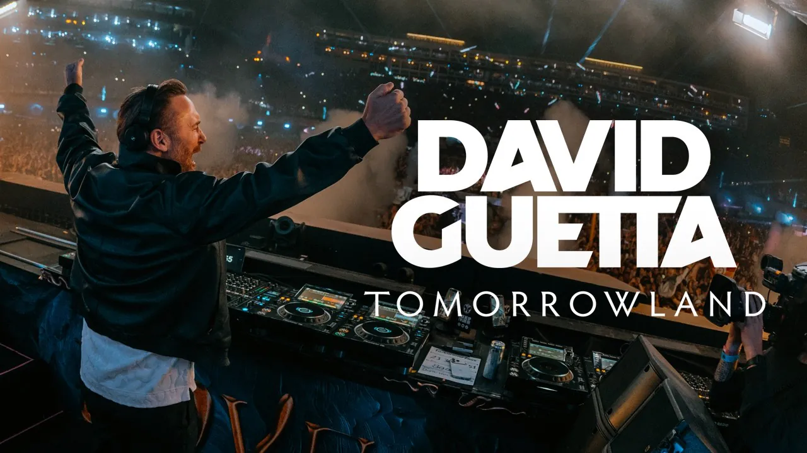

El festival
Tomorrowland
Entradas, preguntas frecuentes, transporte y contacto con la organización.

Contacto
Tomorrowland se celebra cada verano en el parque De Schorre, en Boom (Bélgica), a medio camino entre Bruselas y Amberes. Aquí tienes el mapa, cómo llegar y los canales oficiales.
Durante el festival hay transporte organizado (trenes, buses y lanzaderas). Consulta los horarios y las opciones de cada edición en el sitio oficial antes de viajar.
Para entradas, horarios y novedades, escribe siempre por los canales oficiales.
El festival
Entradas, preguntas frecuentes, transporte y contacto con la organización.
El artista
Lanzamientos, fechas de gira y noticias del artista.